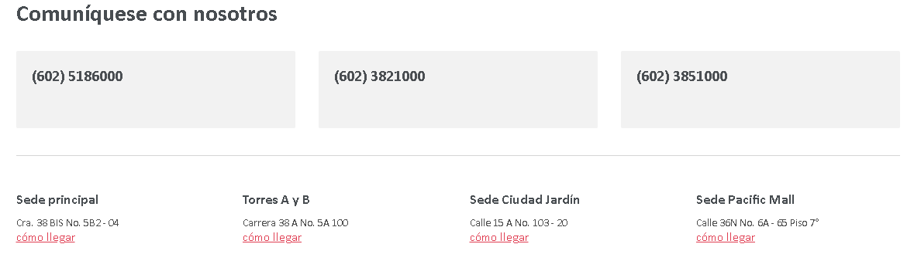

HemoHearth
Trabajamos por su salud
QUIENES SOMOS?
En los inicios de los años 70, un grupo de profesores de la escuela de Medicina de la Universidad del Valle, concibió la idea de crear un centro de especialistas, para ejercer su práctica privada. Con este sueño se inicia el Centro Médico HemoHerat, que abre sus puertas a la comunidad caleña en el mes de agosto de 1976, con 28 consultorios, al que se le sumarían en los meses siguientes un pequeño laboratorio clínico y un equipo de rayos x.
En la década de los 80, el Centro Médico recibe a otro grupo de especialistas en las distintas ramas de la medicina, y da un importante paso al abrir los servicios de Urgencias 24 horas, Cirugía y Hospitalización, destacándose como pionero a nivel nacional del modelo de cirugía ambulatoria, con todas sus ventajas para los pacientes, los empleadores y para el sistema de salud en general porque se minimizan los días de incapacidad
y los costos asociados.
Paso a paso, el Centro Médico , fue cimentando las bases de una entidad empeñada en servir con calidad para cuidar y preservar la vida, y fue creando una comunidad de clientes fieles que ya percibía desde sus inicios su propuesta de valor diferenciada. Este enfoque hacia una estrategia de servicio – que se ha mantenido a lo largo de su historia- es lo que ha moldeado el perfil de la empresa, ha convocado distintas voluntades, y ha permitido
la toma de decisiones consistentes e inteligentes acerca de la asignación apropiada de los recursos, la elección de los distintos servicios, y la adopción de nuevas tecnologías.
